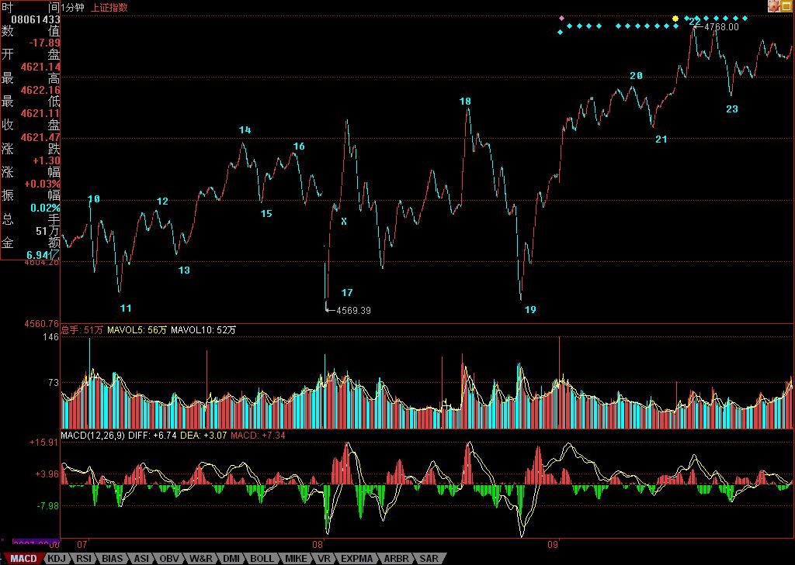

缠中说禅博客
缠中说禅 当代奇人，
一个永远只愿站立且希望探索、
展示人的所有潜能和可能的人，真实身份未明。

顶住明天，第四拨人才可能解脱。
(2007/08/09 16:04:24 周四)
走势上，下图中20-21是14-17的1分钟中枢一个类第三类买点，站在8-17这个5分钟中枢的角度，明天是否能形成第三类买点就极端重要了。（注意，图形一收放，图中数字会走，本ID今天才发现这问题，昨天图中的17位置移动了，今天这个位置才是对的，其实，这个根据定义就很容易发现，17后向上的中间有一个X，就是因为这不构成一笔，因此，18必须到目前的位置才满足至少三笔的要求。）
因此，今天的题目是针对此而说的，只要能顶住明天，形成这个5分钟中枢的第三类买点，然后再拜托周末没有大的消息，再给两天时间大肆宣传，下周一，新的资金才会有机会补充进来。今天成交量的萎缩，使得第四拨人的努力有不靠谱的地方，因此，明天的第三类买点至关重要，一旦出现跌回8-17的中枢，那么这群人当举重手的可能性就根本无须探讨了。
看不明白上面的，本ID已经给出最简单的方法，就是短线看5日线，但这就可以让你安心持股了。技术高的获取更高的利润，这是天经地义的。复杂的不会，那就玩简单的，千万别吃夹生饭。会就会，不会就学到会，没学会之前，就先用简单的方法操作。对于已经学会的各位，也应该养成好习惯，就是边看盘，边把段给分了，这样操作起来，就一目了然了。这包括大盘和自己操作的个股。
注意，本ID说了只坐轿子，但没有任何地方，本ID曾经说要看空。本ID之所以能在市场中生存十几年而不断壮大，唯一秘诀就是底部之后只坐轿子。本ID的方法很简单，就是留了机动的资金后，把仓位打到最大，然后不断在出现中枢震荡时，保持仓位把差价搞出来。一般情况下，到一段行情顶部的时候，本ID原来的仓位都要下降到70%-75%，注意，筹码不丢失，只是钱多出来，所以仓位自然下来了。这样，无论发生什么，本ID都是大赢了。
在市场中，关键是能长期保持赢利，本ID从来没见过喜欢当轿夫的最终能活下来的。谁爱当轿夫就当去，本ID依然如故。而且本ID还要特不厚道，还要经常批评轿夫的姿势不美、动作恶心。例如，本ID今天就要批评，轿夫们，本ID其他中字头的都不错，就是中石化、中国银行有点蔫，连新高都没创。哪位轿夫有力气的，也来一把吧。另外、抬中铝的，动作优美点，今天走得特恶心，搞了一个双针出来；潍柴动力的轿夫，手脚麻利点，反正都要上100的，就别摆太多姿势了；中国国航，也比较丑陋，连南航都比不上，你们李总怎么见部队的朋友？
股票，要有放松的心态，轿子都不会坐，那就当抬轿的，或者当饺子给人吃了吧。
今天可以回答问题到5点。
